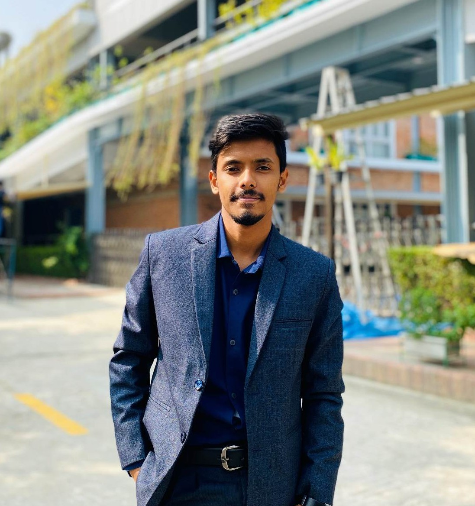

Contact: aiuohallratul2000@gmail.com
Linked in: Aiuohall Ratul
github: Aiuohall Ratul
|  |
I am a Computer Science and Engineering undergraduate with a strong foundation in programming, object-oriented concepts, and problem-solving. I have completed multiple academic projects using C# and Java, including projects based on OOP and OOP2 principles, and have hands-on experience with C++, Python, Java, and HTML. I also have a growing interest in IoT-based systems and emerging technologies. I am seeking opportunities to develop my skills further and build a career as a dedicated and competent software engineer. |
My career goal is to become a skilled software engineer who can contribute to innovative projects and make a positive impact in the technology industry. I aim to continuously learn and grow my technical skills, work on challenging projects, and collaborate with talented professionals to create meaningful software solutions that address real-world problems.
In the long term, I envision myself leading a team of developers in a reputable tech company, driving the development of cutting-edge software applications. I aspire to be recognized for my expertise in n software engineering and to contribute to advancements in technology that improve people's lives and drive innovation in the industry.